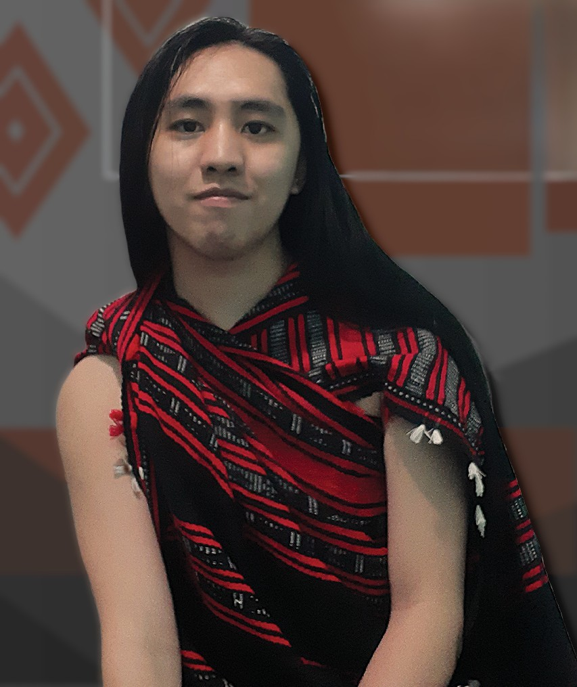
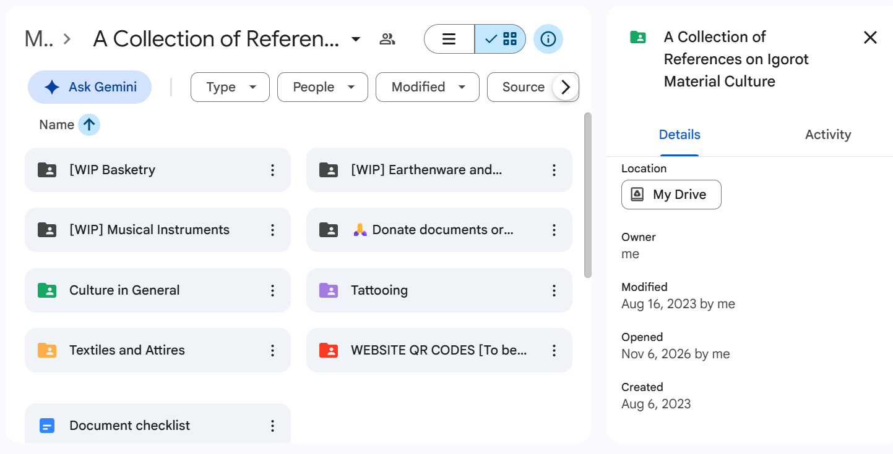
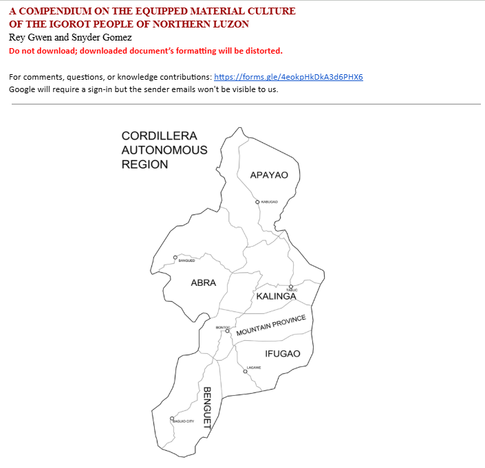
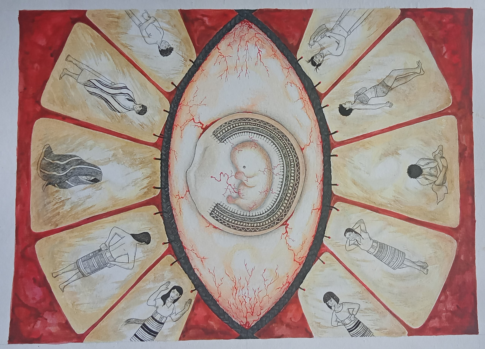

Khawis!
Helrey Gwen T. Dagdagi
Life is a tapestry.
About Me
A current student in the Associate of Arts in Digital Design and Arts. I also work professionally as a production artist, specifically a needlepoint canvas painter. Skills in arts and design led to a consecutive academic path relating to the field. My time at UP Baguio under the Certificate in Fine Arts program and my identity as an indigenous person developed a special interest: studying the visual traditional arts of Indigenous Cultural Communities (ICCs) in the Cordillera Administrative Region, and consequently, an advocacy to demystify them amidst knowledge decay and misinformation in media. Being deployed as a teacher in 2023 for NSTP-LTS strengthened the confidence to teach about the aforementioned interest.

My Interests
Speculative Fiction
Franchises/Media I follow:
- Dune Saga
- All Tomorrows
- Curious Archive
- Avatar (Nicklodeon, Paramount)
Documentaries
Genres I like:
- Nature
- Ethnographic
- True Crime
Indigenous Material Culture
I specialize in the Indigenous Cultural Communities (ICCs) of the Cordillera Administrative Region.
Passion Projects
Reference works
Some reference works I have created:
"A Collection of References on Igorot Material Culture"

A Google Drive folder featuring a collection of books, journal articles, slideshows, as well as QR codes to websites containing information about Igorot cultures. This was initially limited to material/tangible cultures, however, I realized the difficulty to find resources about intangible cultures as well. And so I decided to collect those as well.
Visit Here!"A Compendium on the Equipped Material Culture of the Igorot People of Northern Luzon"

A Google Doc featuring a continuous compilation of images and information on the material culture of Igorots. This ties the information in my first project to photographs and illustrations of the actual artifacts as they appeared during the previous two centuries and today.
Visit Here!(Make sure to have stable internet!)
Painting
"The Growth We Don't See"
Mixed-media on board, 2022
15x20in

A painting for a school task depicting the struggle of reconciling one's transgender identity and their gender-rigid Indigenous culture.